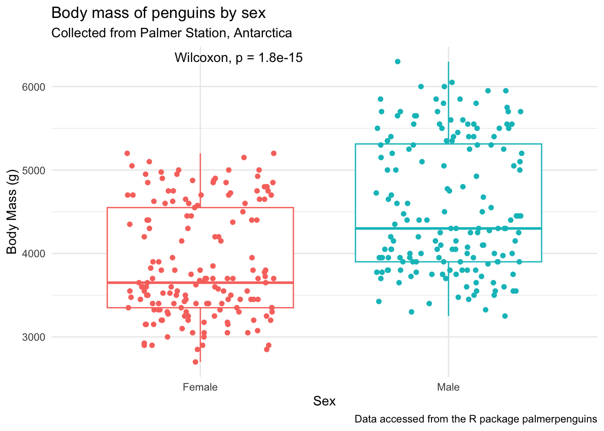
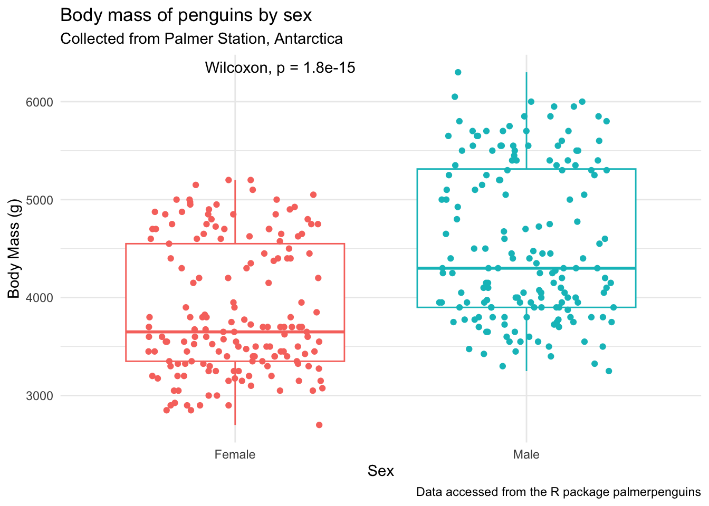

Annotating Statistics onto Plots
Week 9
Introduction
Now that we’ve spent some time going through how to make plots, today we will focus on how to annotate statistics that you’ve calculated to show statistical differences, embedded within your plot. I will go over a few different ways to do this.
The purpose of today’s session is more to give you practical experience with running and retrieving statistical analysis output, than teaching about the assumptions and background of the test itself. If you are looking for a good statistics class, I would recommend Dr. Kristin Mercer’s HCS 8887 Experimental Design.
Load libraries and data
Before we get started, let’s load our libraries.
We are going to use data that was collection about body characteristics of penguins on Palmer Station in Antarctica. This data is in a dataframe called penguins in the package palmerpenguins which you can download from CRAN.

# install.packages(palmerpenguins)
library(tidyverse)
library(palmerpenguins) # for penguins data
library(rstatix) # for pipeable stats testing
library(agricolae) # for posthoc tests
library(ggpubr) # extension for adding stats to plots
library(glue) # for easy pastingknitr::kable(head(penguins)) # kable to make a pretty table| species | island | bill_length_mm | bill_depth_mm | flipper_length_mm | body_mass_g | sex | year |
|---|---|---|---|---|---|---|---|
| Adelie | Torgersen | 39.1 | 18.7 | 181 | 3750 | male | 2007 |
| Adelie | Torgersen | 39.5 | 17.4 | 186 | 3800 | female | 2007 |
| Adelie | Torgersen | 40.3 | 18.0 | 195 | 3250 | female | 2007 |
| Adelie | Torgersen | NA | NA | NA | NA | NA | 2007 |
| Adelie | Torgersen | 36.7 | 19.3 | 193 | 3450 | female | 2007 |
| Adelie | Torgersen | 39.3 | 20.6 | 190 | 3650 | male | 2007 |
2 group comparisons (t-tests or similar)
Our question: Is there a significant difference in the
body_weight_gof male and female penguins?
Before we run the statistics, let’s make a plot to see what this data looks like.
# what are the values for sex?
unique(penguins$sex)[1] male female <NA>
Levels: female male# plot
(penguins_by_sex <- penguins |>
drop_na(body_mass_g, sex) |> # remove NAs for body_mass_g and sex
ggplot(aes(x = sex, y = body_mass_g, color = sex)) +
geom_boxplot(outlier.shape = NA) + # remove outliers
geom_jitter(height = 0, width = 0.3) + # jitter only in the x direction
scale_x_discrete(labels = c("Female", "Male")) + # change x-axis labels
theme_minimal() +
theme(legend.position = "none") +
labs(x = "Sex",
y = "Body Mass (g)",
title = "Body mass of penguins by sex",
subtitle = "Collected from Palmer Station, Antarctica",
caption = "Data accessed from the R package palmerpenguins"))
It looks like there is a difference here. Before adding the statistics to our plot, let’s:
- test that our data is suitable for running the text we want
- run the statistical test separately from the plot
Testing assumptions
Briefly, in order to use parametric procedures (like a t-test), we need to be sure our data meets the assumptions for 1) normality and 2) constant variance. This is just one way to do these tests, there are others that I am not going to go over.

Normality
We will test normality by the Shapiro-Wilk test using the function rstatix::shapiro_test(). This function is a pipe-friendly wrapper for the function shapiro.test(), which just means you can use it with pipes.
penguins |>
drop_na(body_mass_g, sex) |> # remove NAs
group_by(sex) |> # test by sex
shapiro_test(body_mass_g) # test for normality# A tibble: 2 × 4
sex variable statistic p
<fct> <chr> <dbl> <dbl>
1 female body_mass_g 0.919 0.0000000616
2 male body_mass_g 0.925 0.000000123 This data is not normal, which means we need to use non-parametric tests. Since we are not meeting the assumption for nornality, really you don’t need to test for constant variance, but I’ll show you how to do it anyway.
Constant variance
We can test for equal variance using Levene’s test, levene_test() which is part of the rstatix package. Again, this is a pipe-friendly wrapper for the function levene.test().
penguins |>
drop_na(body_mass_g, sex) |> # remove NAs
levene_test(body_mass_g ~ sex) # test for constant variance# A tibble: 1 × 4
df1 df2 statistic p
<int> <int> <dbl> <dbl>
1 1 331 6.06 0.0143No constant variance. Double Non-parametric.
Can we visualize normality another way?
penguins |>
drop_na(body_mass_g, sex) |>
ggplot(aes(x = body_mass_g, y = sex, fill = sex)) +
ggridges::geom_density_ridges(alpha = 0.7) + # density ridgeline plot
scale_y_discrete(labels = c("Female", "Male")) +
theme_classic() +
theme(legend.position = "none") +
labs(x = "Body Mass (g)",
y = "Sex",
title = "Distribution of body weights for male and female penguins")Picking joint bandwidth of 235
These two distributions look bimodal(and thus not normal). This is likely because we have 3 different species of penguins here. You can see below that actually each species looks reasonably normal.
penguins |>
drop_na(body_mass_g, sex) |>
ggplot(aes(x = body_mass_g, fill = sex)) +
geom_histogram() +
facet_grid(cols = vars(species), rows = vars(sex)) + # 2 way facet
theme_classic() +
theme(legend.position = "none") +
labs(x = "Body Mass (g)",
y = "Count")`stat_bin()` using `bins = 30`. Pick better value `binwidth`.
Non-parametric t-test
This means if we want to test for different means, we can use the Wilcoxon rank sun test, or Mann Whitney test. If your data was normal, you could just change wilcox_test() to t_test() and the rest would be the same.
penguins |>
drop_na(body_mass_g, sex) |>
wilcox_test(body_mass_g ~ sex,
paired = FALSE)# A tibble: 1 × 7
.y. group1 group2 n1 n2 statistic p
* <chr> <chr> <chr> <int> <int> <dbl> <dbl>
1 body_mass_g female male 165 168 6874. 1.81e-15This is not surprising, that there is a significant difference in body weight between male and female penguins. We can see this clearly in our plot.
How can we add the stats to our plot?
Plot
Using stat_compare_means()
The function stat_compare_means() allows mean comparison p-values to be easily added to a ggplot.
Note, the function should look at your data and test for normality and pick the statistical test accordingly. You can see that is working in the chunk below, but I would recommend that you always do your own statistical test and make sure you plot accordingly.
penguins_by_sex +
stat_compare_means()
penguins_by_sex +
stat_compare_means(method = "wilcox.test") 
Manually with geom_text() or annotate()
In general, plotting using geom_text() is easier, and follows classic geom_() syntax (e.g., includes aes()) but for some reason these don’t pass as vectorized objects so sometimes it yields low quality images. Using annotate() passes as vectors and thus tends to be higher quality. You can decide which you want to use depending on your purpose.
If I’m being honest, the most common way that I would add statistics to a plot if I was trying to do just a few simple plots at once, would be with annotate() . I like to use annotate() over geom_text() or geom_label() because it is vectorized and don’t become low quality down the road.
With geom_text()
penguins_by_sex +
geom_text(aes(x = 2, y = 6500, label = "*"), # x, y, and label within aes()
color = "black", size = 6)Warning in geom_text(aes(x = 2, y = 6500, label = "*"), color = "black", : All aesthetics have length 1, but the data has 333 rows.
ℹ Please consider using `annotate()` or provide this layer with data containing
a single row.
With annotate()
penguins_by_sex +
annotate(geom = "text", # note no aes()
x = 2, y = 6500,
label = "*",
size = 6)
You can also add multiple annotation layers. I’m introducing a new function here, glue() which is amazing for easy syntax pasting of strings with data.
The syntax for glue() is like this:
x <- 2 + 3
glue("2 + 3 = {x}")2 + 3 = 5# we did this already, just assigning to object
by_sex_pval <- penguins |>
drop_na(body_mass_g, sex) |>
wilcox_test(body_mass_g ~ sex,
paired = FALSE)
# plot
penguins_by_sex +
ylim(2500, 7500) + # adjust the y-axis so there's space for the label
annotate(geom = "text", x = 2, y = 6500, label = "*", size = 6) +
annotate(geom = "text", x = 2, y = 7000,
label = glue("Wilcoxon signed rank test \np-value = {by_sex_pval$p}"))
>2 group comparisons (ANOVA or similar)
When we are comparing means between more than 2 samples, we will have to first run a statistical test to see if there are any significant differences among our groups, and then if there are, run a post-hoc test. Before we do that, let’s plot.
Are there significant differences in body mass
(penguins_f_massbyspecies <- penguins |>
drop_na(body_mass_g, species, sex) |>
filter(sex == "female") |>
ggplot(aes(x = species, y = body_mass_g, fill = species)) +
geom_violin(outlier.shape = NA,
draw_quantiles = 0.5) + # add the median by drawing 50% quantile
ggdist::geom_dots(side = "both", color = "black", alpha = 0.8) +
theme_minimal() +
theme(legend.position = "none") +
labs(x = "Penguin Species",
y = "Body Mass (g)",
title = "Body mass of female penguins by species",
subtitle = "Collected from Palmer Station, Antarctica",
caption = "Data accessed from the R package palmerpenguins"))Warning: The `draw_quantiles` argument of `geom_violin()` is deprecated as of ggplot2
4.0.0.
ℹ Please use the `quantiles.linetype` argument instead.Warning in geom_violin(outlier.shape = NA, draw_quantiles = 0.5): Ignoring
unknown parameters: `outlier.shape`Testing assumptions
Normality
# testing normality by group
penguins |>
drop_na(body_mass_g, sex) |> # remove NAs
filter(sex == "female") |>
group_by(species) |> # test by species
shapiro_test(body_mass_g) # test for normality# A tibble: 3 × 4
species variable statistic p
<fct> <chr> <dbl> <dbl>
1 Adelie body_mass_g 0.977 0.199
2 Chinstrap body_mass_g 0.963 0.306
3 Gentoo body_mass_g 0.981 0.511# testing normality across all data
penguins |>
drop_na(body_mass_g, sex) |> # remove NAs
filter(sex == "female") |>
shapiro_test(body_mass_g) # test for normality# A tibble: 1 × 3
variable statistic p
<chr> <dbl> <dbl>
1 body_mass_g 0.919 0.0000000616Ok looks like we have normally distributed data among the different species of female penguins.
Constant variance
levene_test() which is part of the rstatix package. Again, this is a pipe-friendly wrapper for the function levene.test().
penguins |>
drop_na(body_mass_g, sex, species) |> # remove NAs
filter(sex == "female") |>
levene_test(body_mass_g ~ species) # test for constant variance# A tibble: 1 × 4
df1 df2 statistic p
<int> <int> <dbl> <dbl>
1 2 162 0.0357 0.965We have constant variance. Along with normally distributed data, this means that we can use parametric tests. In the case of >2 samples, that would be ANOVA.
ANOVA
The most commonly used function to run ANOVA in R is called aov() which is a part of the stats package that is pre-loaded with base R. So no new packages need to be installed here.
If we want to learn more about the function aov() we can do so using the code below. The help documentation will show up in the bottom right quadrant of your RStudio.
?aov()We can run an ANOVA by indicating our model, and here I’m also selecting to drop the NAs for our variables of interest, and filtering within the data = argument.
aov_female_massbyspecies <-
aov(data = penguins |>
filter(sex == "female") |>
drop_na(body_mass_g, species),
body_mass_g ~ species)Now lets look at the aov object.
summary(aov_female_massbyspecies) Df Sum Sq Mean Sq F value Pr(>F)
species 2 60350016 30175008 393.2 <2e-16 ***
Residuals 162 12430757 76733
---
Signif. codes: 0 '***' 0.001 '**' 0.01 '*' 0.05 '.' 0.1 ' ' 1We can take the output of our ANOVA and use the function tidy() within the broom package to turn our output into a tidy table. Here, the notation broom::tidy() means I want to use the function tidy() that is a part of the broom package. This works even though I haven’t called library(broom) at the beginning of my script.
tidy_anova <- broom::tidy(aov_female_massbyspecies)
knitr::kable(tidy_anova)| term | df | sumsq | meansq | statistic | p.value |
|---|---|---|---|---|---|
| species | 2 | 60350016 | 30175008.01 | 393.2465 | 0 |
| Residuals | 162 | 12430757 | 76733.07 | NA | NA |
See how this is different from just saving the ANOVA summary? Open both anova_summary and tidy_anova and note the differences.
anova_summary <- summary(aov_female_massbyspecies)Posthoc group analysis
Now that we see we have a significant difference somewhere in the body mass of the 3 species of female penguins, we can do a posthoc test to see which groups are significantly different. We will do our post-hoc analysis using Tukey’s Honestly Significant Difference test and the function HSD.test() which is a part of the useful package agricolae.
tukey_massbyspecies <- HSD.test(aov_female_massbyspecies,
trt = "species",
console = TRUE) # prints the results to console
Study: aov_female_massbyspecies ~ "species"
HSD Test for body_mass_g
Mean Square Error: 76733.07
species, means
body_mass_g std r se Min Max Q25 Q50 Q75
Adelie 3368.836 269.3801 73 32.42126 2850 3900 3175.0 3400 3550.00
Chinstrap 3527.206 285.3339 34 47.50637 2700 4150 3362.5 3550 3693.75
Gentoo 4679.741 281.5783 58 36.37285 3950 5200 4462.5 4700 4875.00
Alpha: 0.05 ; DF Error: 162
Critical Value of Studentized Range: 3.345258
Groups according to probability of means differences and alpha level( 0.05 )
Treatments with the same letter are not significantly different.
body_mass_g groups
Gentoo 4679.741 a
Chinstrap 3527.206 b
Adelie 3368.836 cLike we did with the aov object, you can also look at the resulting HSD.test object (here, tukey_massbyspecies) in your environment pane.
Here, instead of using the broom package, you can convert the part of the tukey_bill_length object that contains the post-hoc groupings into a dataframe using as.data.frame().
tidy_tukey <- as.data.frame(tukey_massbyspecies$groups)
tidy_tukey body_mass_g groups
Gentoo 4679.741 a
Chinstrap 3527.206 b
Adelie 3368.836 cPlot
Using stat_compare_means()
penguins_f_massbyspecies +
stat_compare_means()
penguins_f_massbyspecies +
stat_compare_means(method = "anova")
Manually with geom_text() or annotate()
In general, plotting using geom_text() is easier, and follows classic geom_() syntax (e.g., includes aes()) but for some reason these don’t pass as vectorized objects so sometimes it yields low quality images. Using annotate() passes as vectors and thus tends to be higher quality. You can decide which you want to use depending on your purpose.
We want to add the letters to this plot, so we can tell which groups of penguin species are significantly different.
Before we can do this, we will need to do some of everyone’s favorite task, wrangling. We are going to figure out what the maximum body_mass_g for each species is, so it will help us determine where to put our letter labels. Then, we can add our labels to be higher than the largest data point. We will calculate this for each group, so that the letters are always right about our boxplot.
body_mass_max <- penguins |>
filter(sex == "female") |>
drop_na(body_mass_g, species) |>
group_by(species) |>
summarize(max_body_mass = max(body_mass_g))
body_mass_max# A tibble: 3 × 2
species max_body_mass
<fct> <int>
1 Adelie 3900
2 Chinstrap 4150
3 Gentoo 5200Let’s add our post-hoc group info to body_mass_max, since those two dataframes are not in the same order. Instead of binding the two dataframes together, we are going to join them using one of the dplyr _join() functions, which allows you to combine dataframes based on a specific common column. The join functions work like this:
inner_join(): includes all rows in x and y.left_join(): includes all rows in x.right_join(): includes all rows in y.full_join(): includes all rows in x or y.
In this case, it doesn’t matter which _join() we use because our dfs all have the exact same rows.
tidier_tukey <- tidy_tukey |>
rownames_to_column() |> # converts rownames to columns
rename(species = rowname) # renames the column now called rowname to species
# join
body_mass_for_plotting <- full_join(tidier_tukey, body_mass_max,
by = "species")Let’s plot. First using geom_text()
penguins_f_massbyspecies +
geom_text(data = body_mass_for_plotting,
aes(x = species,
y = 175 + max_body_mass,
label = groups))
Next using annotate().
penguins_f_massbyspecies +
annotate(geom = "text",
x = c(3,2,1),
y = 175 + body_mass_for_plotting$max_body_mass,
label = body_mass_for_plotting$groups)
Useful resources
There have been previous Code Club sessions about adding statistics to plots: